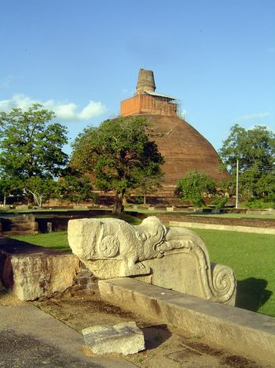
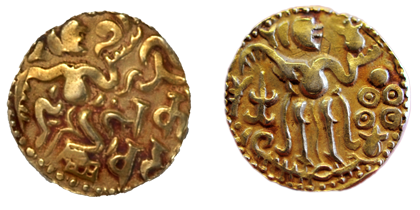
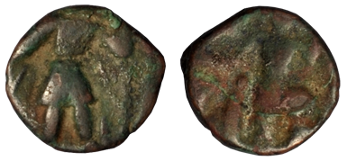

Kahapana
Swastika coins
Maneless Lion coins
Lakshmi Plaques
Kahavanu or Lankeshvara coin
Foreign Coins

The Anuradhapura Kingdom named for its capital city, was the first established kingdom in ancient Sri Lanka. Founded by King Pandukabhaya in 377 BC. Epigraphs reveal a multitude of Information about trade and currency use during the Anuradhapura era. These records suggest that the production and distribution of coins were done systematically. At the time, the director in charge of coin production was known as “Rupadaka” (Periyakada Vihara Epigraph). The official who authorized the produced coins was known as “Rupawaapara”. (Kaduru Wewa Epigraph)
 Kahapana Plaques
Kahapana Plaques
The earliest unit of currency known in the island is referred to as a Kahapana. They are called puranas in Sanskrit and eldings in English. They are commonly known as punch marked coins, due to the marks or symbols that had been struck either on one side or both sides of the coin. Kahapanas are reckoned to have been produced by cutting strips of metal from hammered sheets. The known coins have been of many shapes, such as round, square, rectangular or oblong. Their weight had been adjusted by clipping the corners. The metal of the Kahapana has been found mostly to be silver.
Accordingly, the coins authorized by the King carried the Royal stamp. When these coins passed from one to another, various unique markings were added by each owner. As a result, these coins bear a multitude of different symbols. One particular coin contains 20 such markings which include the sun, the moon, a tusker, a dog, and a tree. It has been determined that over 500 unique markings were used on the ‘Kahapana’ coins. It is believed that these coins were initially produced in India and not in Sri Lanka. Due to international trade, these coins reached Sri Lanka via Indian vendors. Consequently, based on these coins, Sri Lanka produced its own ‘Kahapana’.
The ‘Kahapana’ had been in use in Sri Lanka from 3rd century B.C. to 1st century A.D. Anuradhapura, Tholuwila, Wessagiriya, Sigiriya, Bunnapola, Dedigama, Minuwangoda, Udawalawe, Ambalangoda, Tissamaharama, Vallipuram, Kantharodai, Jaffna, Mulativu, Maanthota, Padaviya, Trincomalee are some of the many places where this type of coins have been found.
Apart from the ‘Kahapana’ coin with its many markings, other types of coins were also used during the Anuradhapura era. The tusker and swastika coin is one such type. It is a small Copper coin. A chosen few markings that occasionally appeared on the ‘Kahapana’ were added in the making of this particular coin.
 Tusker and Swasthika Coin
Tusker and Swasthika Coin  Bodhi Tree and Swasthika Coin
Bodhi Tree and Swasthika Coin Bodhi Tree and Swasthika Coin
Bodhi Tree and Swasthika CoinOn one side of the coin, there is an image of a walking tusker, a stupa drawn using three half moons, a swastika and a Bo tree with three branches inscribed in a square. On the flipside, there is a swastika, a trident and a stupa. However, when considering the coin as a unit of currency, it is probable that it was in the same category as a ‘Kahapana’.
 Maneless Lion coins
Maneless Lion coins
This is a Copper coin. On one side, there is an image of a lion. On the other side, there are three or sometimes four dots. It is likely that these dots indicate the value of the coin. The diameter of this coin is between ½ - ¾ inches and it weighs between 15-40 grains.
These coins were used from 3-4 A.D. The coins have been found during excavations in Anuradhapura and the Northern regions of the island.

 Lakshmi Plaques
Lakshmi Plaques
Coins with a female figure carved into the face were first circulated in Sri Lanka as early as 3 B.C - 8 A.D. It is believed that the woman on the coin is the goddess Lakshmi. Because of this, the coin is known as the ‘Lakshmi Thahadu (metal sheet)’. These coins were produced in two ways: the coins were either plated or engraved pieces of Copper. They also came in different sizes. The plated kind were 1 ¼ inches in length and ½ inch in width. The coins are a mixture of approximately 60 percent Lead and 15 percent Copper.
On the coin face, the goddess Lakshmi is standing on a lotus flower grasping two lotus stems that are protruding from either side of the flower. The stems, which reach her shoulders, each carry a blossomed lotus flower upon which stands a tusker holding a clay water vase. The image depicts the goddess bathing in the water pouring out of the vases held by the two tuskers. In some versions of this coin, goddess Lakshmi is shown seated on a lotus flower.
The Lakshmi coins have been found is such places as Anuradhapura, Jaffna, Wallipuram and Thirukethiswaram as well as Kantharoda, Mannar, Mulativu, Chilaw and Thissamaharama.

KahavanuA Sinhalese gold coinage known as the 'Kahavanu" had been in circulation in the island from about the 7th to 8th centuries AD. These coins were either gold or gold-plated. They were distinguishable in terms of value as ‘Kahawanu’, ‘Ada Kahawanu’, ‘De Aka’ and ‘Aka’. On the face of the coin there is a human figure standing on a lotus stem. The figure appears to be clad in something similar to a ‘Dhothi’. The figure’s upturned left hand is holding an object against his tilted face. Some believe that the figure is ‘Kuwera’ the God of Wealth. There is a conch and Lotus flower on the flipside of the coin.
There are various opinions about these images. However, these coins can be grouped based on the object the figure is holding in his left hand; Sun and moon, Trophies, Lotus flower and half moon, Jasmine bud and lotus flower, Globe and bangle, Jasmine flower and conch.
Clear proof that Sri Lanka was a functioning naval base in the past comes from the foreign coins used during the Anuradhapura era. A great number of Greek, Roman, Chinese, Arabic and Indian coins used in international trade were found in Anuradhapura, Mihintale, Sigiriya, Kurunegala, Matara, Akurugoda and Badulla.
 Indo - Greek Coin
Indo - Greek Coin
 Pallawa Coin
Pallawa Coin
 Sasanian Shapur Coin
Sasanian Shapur Coin

Kushan CoinSeveral types of Copper Roman coins were used in Sri Lanka. These coins were minted in Rome. The fact that these coins were found all over Sri Lanka indicates that they were widely in use at the time. Majority of these coins belong to the 4th and 5th centuries A.D. This implies that a great deal of trading occurred between the Roman Empire and Sri Lanka. Additionally, due to high circulation and consequent ware and tare, these coins have a tattered appearance.
 Roman Coin - 1
Roman Coin - 1
 Roman Coin - 2
Roman Coin - 2
In addition to the coins that were acquired through international trade; it appears that Roman coins were also minted in Sri Lanka. A large number of such coins were discovered in Navimana, Matara. A number of Roman coins of which some were minted in Rome as well as in Sri Lanka were found in archeological excavations in Sigiriya and Anuradhapura. The main difference between these two types of coins is that the locally produced coins are missing an English character that can be seen on the coins minted in Rome.Instead of the English character, the locally minted coins bear a number ofshort lines arranged in different shapes.
These coins are made of Copper or Copper-rich alloys. Coins minted in different eras are different in size as well. The coins are circular with a squareshaped hole in the center. The Chinese Emperor’s name is engraved in Chinese calligraphy along the four sides of the square. There are no markings or images on the flipside of the coin.
 Chinese Coin - 1
Chinese Coin - 1
 Chinese Coin - 2
Chinese Coin - 2
These coins are minted using metals such as copper and silver. On the face, there are devotional phrases in Arabic. The year of issue is inscribed on the flipside.
Preview
Next
05. Post-Independence Period since Establishment of the Central Bank of Ceylon